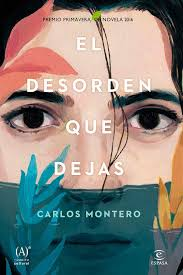

Próximos Lanzamientos
-

"El libro negro de las horas" es una novela de misterio escrita por Eva García Sáenz de Urturi, donde Unai López de Ayala, un experto en perfiles criminales, se enfrenta a un enigma del pasado relacionado con su madre desaparecida, enredado en una peligrosa búsqueda de un libro antiguo.
-

"La chica de nieve" es una novela de Javier Castillo que sigue la historia de la desaparición de una niña durante el desfile de Acción de Gracias en Nueva York, y la obsesiva investigación de una periodista que desentraña oscuros secretos en su búsqueda por la verdad.
-
"Crónica de una muerte anunciada" es una novela de Gabriel García Márquez que narra, a través de un estilo periodístico, los eventos previos y posteriores al asesinato de Santiago Nasar en un pequeño pueblo, donde todos sabían que ocurriría, pero nadie logró impedirlo.
-

"El desorden que dejas" es una novela de Carlos Montero que sigue a Raquel, una joven profesora que llega a un instituto en Galicia para sustituir a una docente fallecida en extrañas circunstancias, y pronto descubre oscuros secretos y amenazas que la arrastran a un peligroso juego psicológico.
Noticias Semanales
-
Murió Leonard Riggio, quien forjó un imperio con Barnes & Noble

Leonard Riggio, quien transformó la industria editorial al crear Barnes & Noble y se convirtió en el librero más poderoso de Estados Unidos antes de que su empresa fuera superada por el auge de Amazon, murió a los 83 años.
-
Julio Cortázar a los 110 años: Los mejores libros para entrar en su universo

Nacido un 26 de agosto de 1914, el argentino fue un escritor con una obra muy particular y creativa. A veces densa, pero exquisitamente literaria, su narrativa sigue siendo un imperdible. En Culto lo recordamos con una guía breve para comenzar a leerlo sin fracasar en el intento.
-
Los libros de la semana y el ranking de bestsellers de agosto
Una novela norteamericana que llega con las mejores recomendaciones y un policial escrito por un experto. Además, los títulos más vendidos.